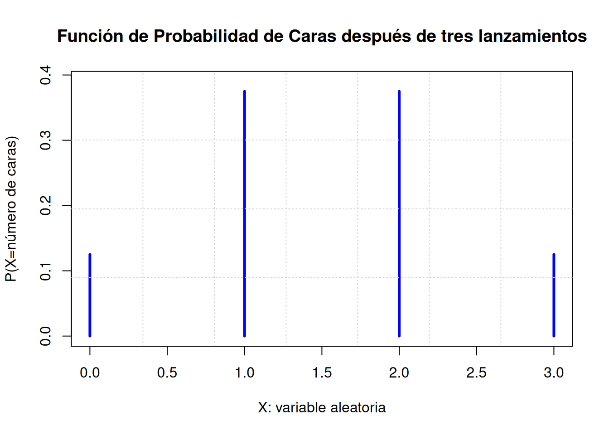
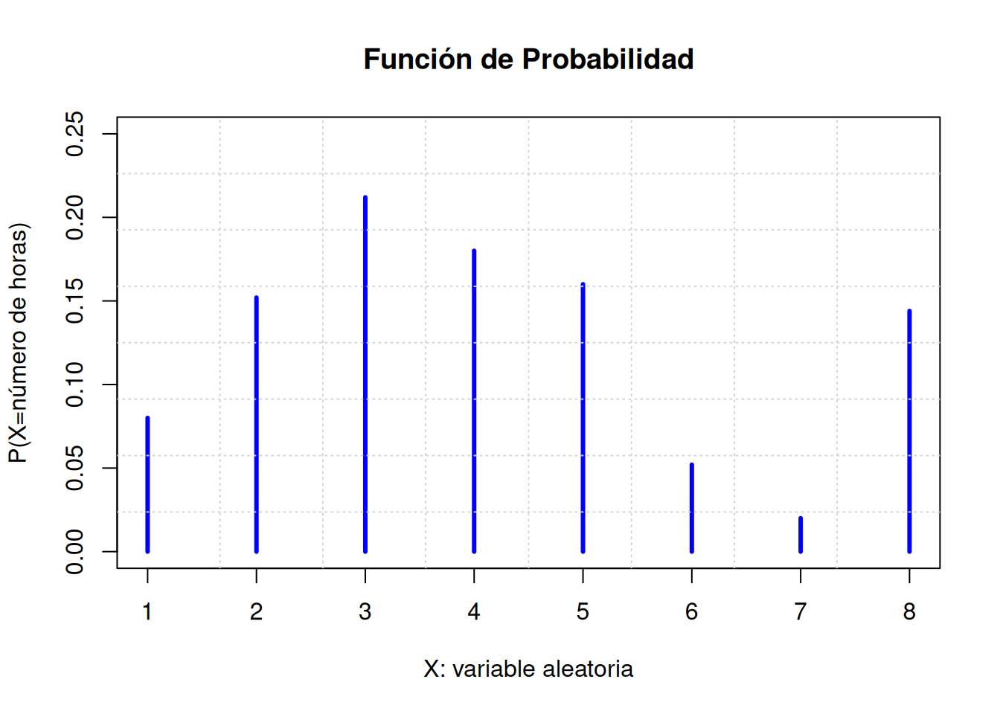
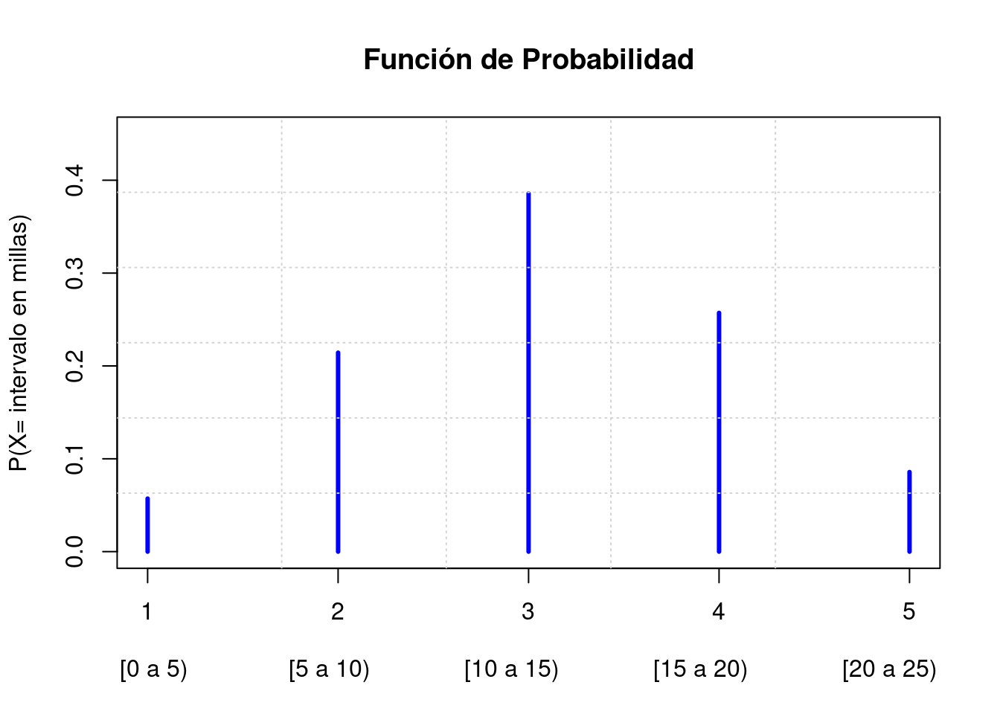
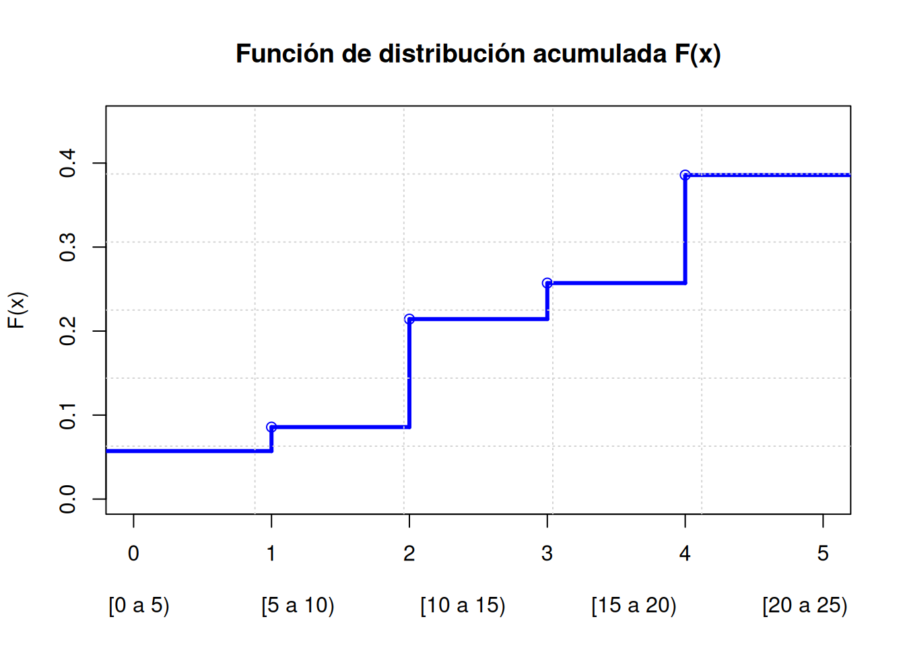

Capítulo 4 Modelos de probabilidad
4.1 Variable Aleatoria (v.a.)
Son varias las formas en las cuales se puede definir el significado de una variable aleatoria \(X\), ellas son:
- Es una aplicación (ó función) entre el conjunto de partes del espacio muestral \(S\), y el conjunto de los números reales \(R\)
- Los resultados presentados al azar en cualquier experimento aleatorio
- Cantidad que resulta de un experimento que, por azar, puede adoptar diferentes valores.
- Es una variable que toma valores numéricos que dependen o resultan de una operación aleatoria.
Existen dos tipos de variables aletorias:
Variable aleatoria discreta (Toma valores en un conjunto numerable como el conjunto de los números naturales \(N\))
Variable aleatoria continua (Toma valores en un conjunto no numerable como el conjunto de los números reales \(R\))
4.2 Distribuciones de Probabilidad
Una distribución de probabilidad entrega toda una variedad de datos que se pueden dar en el desarrollo de un experiento. Tambén se puede definir una distribución de probabilidad como aquella aplicación que asocia a la lista a todos los resultados de un experimento una probabilidad correspondiente a cada resultado del experimento.
4.3 Propiedades que debe cumplir una distribución de probabilidad
\(f(x)\geq 0\)
\(\sum_{\text{para todo} \ x} f(x)=1\)
4.3.1 Ejemplo1
Distribución de probabilidad que se obtiene al lanzar una moneda tres veces donde la variable aleatoria se define como \[ X: \text{número de caras obtenidas después de tres lanzamientos} \]
plot(x=c(0,1,2,3),y=c(1/8,3/8,3/8,1/8),type="h",ylim = c(0,0.390),xlab="X: variable aleatoria",ylab="P(X=número de caras)",col="blue",main="Función de Probabilidad de Caras después de tres lanzamientos",lwd=3)
grid(nx = 7, ny = 4)
4.4 Características de una distribución de probabilidad cualquiera.
- La probabilidad de un resultado en particular se encuentra entre \(0\) y \(1\), inclusive.
- Los resultados sone ventos mutuamente excluyetes.
- La lista es exhaustiva. Por lo tanto, la suma de las probabilidades de los diversos eventos es igual a la unidad
4.4.1 Ejercicio1
En la tabla siguiente se reportan los datos de una muestra de 250 clientes relacionados con el número de horas que se estacionan los automóviles y las cantidades que pagan.
- Convierta la información del número de horas de estacionamiento en una distribución de probabilidad.
4.4.2 Solución (ejercicio1)
Se define la varable aleatoria \(X\) como el número de horas en las cuales ocupa un cliente el servicio de estacionamiento. Y la tabla que muestra la distribución de probabilidad es:
x <- c(1:8)
y <- c(20/250,38/250,53/250,45/250,40/250,13/250,5/250,36/250)
tabla12 <- matrix(c(x,y),ncol=2,byrow=FALSE)
colnames(tabla12) <- c("X=x", "P(X =x)")
tabla12 <- as.data.frame(tabla12)
knitr::kable(
tabla12,
caption = 'Distribución de Probabilidad',
booktabs = TRUE
)| X=x | P(X =x) |
|---|---|
| 1 | 0.080 |
| 2 | 0.152 |
| 3 | 0.212 |
| 4 | 0.180 |
| 5 | 0.160 |
| 6 | 0.052 |
| 7 | 0.020 |
| 8 | 0.144 |
x <- c(1:8)
y <- c(20/250,38/250,53/250,45/250,40/250,13/250,5/250,36/250)
tabla12 <- matrix(c(x,y),ncol=2,byrow=FALSE)
plot(x,y,type="h",ylim = c(0,0.25),xlab="X: variable aleatoria",ylab="P(X=número de horas)",col="blue",main="Función de Probabilidad",lwd=3)
grid(nx = 8, ny = 8)
4.4.3 Ejemplo3
En la tabla siguiente se reportan los datos de una muestra de empleados para determinar la distancia a la que viven de las oficinas centrales de la empresa. Los resultdos aparecen a continuación. Realice:
- Convierta la información de la tabla en una distribución de probabilidad.
- ¿ Qué respondería si se le pregunta \(P(X = \text{Distancia en millas de} \ \ 5 \ \ \text{a} \ \ 10)\) ?
4.4.4 Solución (ejercicio2)
Se define la varable aleatoria \(X\) como el intervalo en millas recorrido por un empleado a las que vive de la oficina central. Y la tabla que muestra la distribución de probabilidad es:
x <- c(1:5)
y <- c(4/70,15/70,27/70,18/70,6/70)
tabla12 <- matrix(c(x,y),ncol=2,byrow=FALSE)
colnames(tabla12) <- c("X=x", "P(X =x)")
tabla12 <- as.data.frame(tabla12)
knitr::kable(
tabla12,
caption = 'Distribución de Probabilidad',
booktabs = TRUE
)| X=x | P(X =x) |
|---|---|
| 1 | 0.0571429 |
| 2 | 0.2142857 |
| 3 | 0.3857143 |
| 4 | 0.2571429 |
| 5 | 0.0857143 |
x <- c(1:5)
y <- c(4/70,15/70,27/70,18/70,6/70)
plot(x,y,type="h",ylim = c(0,0.45),xlab="[0 a 5) [5 a 10) [10 a 15) [15 a 20) [20 a 25)",ylab="P(X= intervalo en millas)",col="blue", main="Función de Probabilidad",lwd=3)
grid(nx = 5, ny = 6)
La \(P(X = \text{Distancia en millas de} \ \ [5 \ \ \text{a} \ \ 10)) = 0.2142857\).
x <- c(1:4)
y <- sort(c(4/70,15/70,27/70,18/70,6/70), decreasing = FALSE)
plot(stepfun(x,y),ylim = c(0,0.45),xlab="[0 a 5) [5 a 10) [10 a 15) [15 a 20) [20 a 25)",ylab="F(x)",col="blue",main="Función de distribución acumulada F(x)",lwd=3)
grid(nx = 5, ny = 6)
4.5 Distribución Binomial
La distribución binomial es una distribución discreta, una de sus características consiste en que sólo hay dos posibles resultados en un determinado ensayo del experimento.
4.6 Experimento de probabilidad binomial
- El resultado de cada ensayo de un experimento se clasifica en una de dos categorías mutuamente excluyentes: éxito o fracaso.
- La variable aleatoria permite contar el número de éxitos en una cantidad fija de ensayos.
- La probabilidad de éxito y fracaso es la misma en cada ensayo.
- Los ensayos son independientes, lo cual significa que el resultado de un ensayo no influye en el resultado del otro.
4.6.1 Fórmula de la Probabilidad Binomial
\[ P(x)=\dfrac{n!}{x!(n-x)!}p^x(1-p)^{n-x} \]
- \(n\) : es el número de ensayos
- \(x\) : es la variable aleatoria definida como el número de éxitos,
- \(p\) : es la probabilidad de éxito en cada ensayo.
- \(q\) : es la probabilidad de fracaso en cada ensayo.
- \(p+q=1\) : es la relación que existe entre la probabilidad de éxito, y la probabilidad de fracaso.
4.6.3 VARIANZA DE UNA DISTRIBUCIÓN BINOMIAL
\[ \sigma^2=np(1-p) \]
\(n\): Representa el número de ensayos.
\(p\): Representa la probabilidad de éxito.
4.6.4 Ejemplo4
Una compañia aerea tiene cinco vuelos diarios de \(A\) a \(B\). Suponga que la probabilidad de que cualquier vuelo llegue tarde sea de \(0.20\).
- ¿Cuál es la probabilidad de que ninguno de los vuelos llegue tarde hoy?
- ¿Cuál es la probabilidad de que exactamente uno de los vuelos llegue tarde hoy?
4.6.5 Solución (ejemplo4)
Como la variable aletoria, se refiere al número de éxitos. En este caso un éxito consiste en que un avión llegue tarde. Como no hay demoras en las llegadas se asigna \(x=0\), es decir de que ninguno de los vuelos llegue tarde hoy. Entonces
\[ P(X=0)=\dfrac{5!}{0!(5-0)!}(0.20)^{0}(1-0.20)^{5-0}= 0.32768 \]
La probabilidad de que exactamente uno de los cinco vuelos llegue tarde hoy es de:
\[ P(X=1)=\dfrac{5!}{1!(5-1)!}(0.20)^{1}(1-0.20)^{5-1}= 0.4096 \] La probabilidad de que exactamente \(3\) vuelos lleguen tarde es de:
\[ P(X=3)=\dfrac{5!}{3!(5-3)!}(0.20)^{3}(1-0.20)^{5-3}= 0.0512 \]
La probabilidad de que a lo sumo tres vuelos lleguen tarde es de: \[ P(X \leq 3)=P(0)+P(1)+P(2)+P(3) = 0.99328 \]
4.7 Distribución Hipergeométrica
Es una variante de la distribución binomial, a diferencia de la binomial se caracteriza por:
- Experimentos excluyentes (éxito y fracaso) que se realizan en \(n\) pruebas.
- Extracciones sin remplazamiento.
Recuede: Uno de los criterios relacinados con la distribución binomial estriba en que la probabilidad de éxito debe permanecer igual en todos los ensayos. Como la probabilidad de éxito no es la misma en todos los ensayos cuando se realiza un muestreo sin reemplazo en una población relativamente pequeña, no debe aplicarse la distribución binomial. En lugar de ésta se aplica la distribución hipergeométrica.
4.7.1 Fórmula de la función de Probabilidad Hipergeométrica
\[ P(x)=\dfrac{C^{S}_{x}C^{N-S}_{n-x}}{C^{N}_{n}}=\dfrac{\dfrac{S!}{x!(S-x)!}\dfrac{(N-S)!}{(n-x)!(N-S-n+x)!}}{\dfrac{N!}{n!(N-n)!}}=\dfrac{S!(N-S)!n!(N-n)!}{x!(S-x)!(n-x)!(N-S-n+x)!N!} \]
- \(N\): Representa el tamaño de la población.
- \(S\): Representa el número de éxitos en la población.
- \(x\): Representa el número de éxitos en la muestra; éste puede asumir los valores \(0\), \(1\), \(2\), \(3\),…
- \(n\): Representa el tamaño de la muestra o el número de ensayos.
- \(C\): Representa el simbolo de combinación.
4.8 Commandos en r-studio
Devuelve resultados de la función de densidad. \(dhyper(x, m, n, k, log = F)\)
Devuelve resultados de la función de distribución acumulada. \(phyper(q, m, n, k, lower.tail = T, log.p = F)\)
\(x\), \(q\): Vector de cuantiles. Corresponde al número de particulares en la muestra.
\(m\): Selección aleatoria particular.(número de éxitos en la población)
\(n\): El número total de la población menos la selección aleatoria particular. \(n = N - m\).
\(k\): El número de la selección a evaluar.(tamaño de la muestra o el número de ensayos)
\(prob\): Probabilidad.
\(log\), \(log.p\): Parámetro booleano, si es TRUE, las probabilidades p son devueltas como \(log (p)\).
\(lower.tail\): Parámetro booleano, si es TRUE (por defecto), las probabilidades son \(P[X ≤ x]\), de lo contrario, \(P [X > x]\).
\(N\): El tamaño de la población
4.9 Condiciones del experimento
La condiciones del experimento:
- Se selecciona una muestra de una población sin reemplazo.
- El tamaño de la muestra \(n\) es mayor que \(5 \%\) del tamaño de la población \(N\).
- Cuando \(N\) es grande respecto a \(n\), \(\frac{n}{N}<0.1\) se puede decir que la variable hipergeométrica \(X\) sigue aproximadamente una distribución binomial
4.10 Característica de la distribución Hipergeométrica
- Los resutados de cada ensayo de un experimento se clasifican en dos categorías exclusivas: éxito o fracaso.
- La variable aletoria es el número de éxitos de un número fijo de ensayos.
- Los ensayos no son independientes.
- Los muestreos se realizan con una población finita sin reemplazo y \(\frac{n}{N}>0.05\). Por lo tanto, la probabilidad de éxito cambia en cada ensayo.
4.10.1 Ejemplo5
Una empresa XXX, tiene 50 empleados en el departamento de ensamblado. Sólo cuarenta de ellos pertenecen al sindicato. Se eligen al azar cinco empleados para formar un comité que hablará con la empresa sobre los horarios de inicio de los turnos. ¿Cuál es la probabilidad de que cuatro de los cinco empleados elegidos para formar parte del comité pertenezcan a un sindicato?
4.10.2 Solución (ejemplo5)
- \(N\) es igual a \(50\), el número de empleados.
- \(S\) tiene un valor de \(40\), el número de empleados sindicalizados.
- \(x\) es igual a \(4\), el número de empleados sindicalizados elegidos.
- \(n\) vale \(5\), el número de empleados elegidos.
Se desea calcular la probabilidad de que 4 de los 5 miembros del comité sean sindicalizados.
\[P(X=4)=\dfrac{C^{S}_{x}C^{N-S}_{n-x}}{C^{N}_{n}}=\dfrac{C^{40}_{4}C^{50-40}_{5-4}}{C^{50}_{5}}= 0.4313372\]
Sustituir los valores \(x=4\),\(m=40\),\(10=50-40\),\(k=5\) en la función \(dhyper(x, m, n=N-m, k, log = F)\)
Se concluye que la probabilidad de elegir al azar a \(5\) trabajadores de ensamblado de los \(50\) trabajadores y encontrar que \(4\) de \(5\) son sindicalizados es de 0.4313372 o \(43.13 \%\)
4.11 Función de distribución de probabilidad de variable continua
El siguiente gáfico de una densidad cualquiera, muestra el área bajo la curva \(f(x)\) entre \(x=a\), \(x=b\), es equivalente a la probabilidad \(P(a \leq x \leq b)\)
Una función de densidad para una v.a. \(X\) continua es una función \(f\) tal que:
\(f(x)\geq 0\)
\(\int_{\text{todo} \ x} f(x)dx=1\)
4.11.1 Media y Varianza para una función de distribución de probabilidad con variable continua
La media \(\mu = \int_{\text{todo} \ x}{xf(x)dx} = E\left[x\right]\)
La varianza \(\sigma^2 = \int_{\text{todo} \ x}{(x-\mu)^2f(x)dx} = Var\left[x\right]\)
4.11.2 Definición
La función \(f(x)\) es una función de densidad de probabilidad \((fdp)\) para la variable aleatoria continua \(X\), definida en el conjunto de números reales, si
\(f(x) \geqq 0\), para toda \(x \in R\)
\(\int^{\propto}_{-\propto}f(x)dx=1\)
\(P(a\leqq X \leqq b)=\int^{b}_{a}f(x)dx\)
4.11.3 Ejemplo
Suponga que el error en la temperatura de reacción, en grados Celsius, en un experimento de laboratorio controlado, es una variable aleatoria continua \(X\) que tiene la función de densidad de probabilidad
\[ f(x)=\begin{cases} \dfrac{x^2}{3} & {\text{si} -1< x< 2},\\ 0 & \text{en otro caso}. \end{cases} \]
Verifique que \(f(x)\) es una función de densidad.
Calcule \(P(0 < X \leqq 1)\)
4.11.4 Solución del ejemplo
Primero
Veamos quien es el dominio de \(f\):
Como \(f\) es una función por tramos su dominio viene establecido como todos los número reales. Es decir
\[ D_{f}=(-1,2) \cup (-\infty,-1] \cup [2,\infty) \]
Veamos que f es positiva para todo su dominio.
\[ \text{Si} \ x \in (-1,2), \quad f(x)=\dfrac{x^2}{3}>0 \]
\[ \text{Si} \ x \in (-\infty,-1) \cup [2,\infty), \quad f(x)=0 \] Se concluye que \(f\geq 0\) para \(x \in (-1,2) \cup (-\infty,-1] \cup [2,\infty)\)
Primero
Veamos que:
\[\int^{\propto}_{-\propto}f(x)dx=1\]
Sabemos que
\[ \int^{\propto}_{-\propto}f(x)dx=\int_{-\infty}^{-1}f(x)dx+\int_{-1}^{2}f(x)dx+\int_{2}^{\infty}f(x)dx \]
\(\int_{-\infty}^{-1}f(x)dx=\int_{-\infty}^{-1}0dx=0\)
\(\int_{2}^{\infty}f(x)dx=\int_{2}^{\infty}0dx=0\)
\(\int_{-1}^{2}\dfrac{x^2}{3}dx=\left. \dfrac{x^3}{9}\right|_{-1}^{2}=\dfrac{1}{9}\left( \left.x^3\right|_{-1}^{2}\right)=\dfrac{1}{9}(8-(-1))=\dfrac{1}{9}(8+1)=\dfrac{9}{9}=1\)
4.12 Distribución de probabilidad de Poisson
La distribución de probabilidad de Poisson describe el número de veces que se presenta un evento durante un intervalo específico. el intervalo puede ser de tiempo, distancia, área o volumen.
La distribución se basa en dos supuestos.
El primero consiste en que la probabilidad es proporcional a la longitud del intervalo.
El segundo supuesto consiste en que los intervalos son independientes.
En otras palabras, cuanto más grande sea el intervalo, mayor será la probabilidad; además, el número de veces que se presenta un evento en un intervalo no influye en los demás intervalos.
4.13 Condiciones del experimento
- La variable aleatoria es el número de veces que ocurre un evento durante un intervalo definido.
- La probabilidad de que ocurra el evento es proporcional al tamaño del intervalo.
- Los intervalos no se superponen y son independientes.
4.13.1 Fórmula de la función de Probabilidad de Poisson
\[ P(x)=\dfrac{\mu^{x}e^{-\mu}}{x!} \]
\(\mu\) (mu): Representa la media de la cantidad de veces (éxitos) que se presenta un evento en un intervalo particular.
\(e\): Representa la constante \(2.71828\) base del sistema de logaritmos neperianos.
\(x\): Representa el número de veces que se presenta un evento.
\(P(x)\): Representa la probabilidad de un valor específico de \(x\).
4.13.2 MEDIA DE UNA DISTRIBUCIÓN DE POISSON
\[ \mu =np \]
\(n\): Representa el número total de ensayos.
\(p\): Representa la probabilidad de éxito.
4.13.3 Ejemplo7
Suponga que una muestra aleatoria de \(1000\) vuelos arroja un total de \(300\) maletas perdidas. De esta manera, la media aritmética del número de maletas perdidas por vuelo es de \(0.3\), que se calcula al dividir \(300/1 000\). Si el número de maletas perdidas por vuelo se rige por una distribución de Poisson con \(0.3\), las diversas probabilidades se calculan con la fórmula, por ejemplo la probabilidad de que no se pierda ninguna maleta es la siguiente:
4.14 La distribución de probabilidad normal
\[ P(x)=\dfrac{1}{\sigma\sqrt{2\pi}}e^{-\dfrac{(X-\mu)^2}{2\sigma^2}} \]
4.15 Regla empírica
Cerca del \(68.3 \%\) (ó \(68 \%\)) del área bajo la curva normal se encuentra a una desviación estándar de la media, lo que se puede describir como \(\mu \pm 1\sigma\).
Alrededor de \(95.4 \%\) del área bajo la curva normal se encuentra a dos desviaciones estándares de la media. Estos se puede escribir como \(\mu \pm 2\sigma\).
Prácticamente alrededor de \(99.7 \%\) del área total bajo la curva se encuentra a tres desviaciones estándares de la media, lo cual se escribe como \(\mu \pm 3\sigma\).
4.15.1 Ejemplo donde se aplicacón la regla
Suponga que el nivel de colesterol \(X\), medido en \(mg/dL\), en una población de niños sanos entre los \(12\) y \(14\) años de edad, sigue una distribución normal con \(\mu =162 mg/dL\) y \(\sigma =28 mg/dL\) (Samuels et al., 2012)
A partir de dicha información se puede saber de forma rápida que aproximadamente el \(68 \%\) de los niños en esta población tienen un nivel de colesterol entre \(162-28=134\) y \(162+28=190 mg/dL\). Es decir:
\[ P(134 <X< 190) \cong 0.68 \]
4.17 Distribución de probabilidad normal estándar
\[ f(z)=\dfrac{1}{\sqrt{2\pi}}e^{\frac{-z^2}{2}} \]
Cualquier distribución de probabilidad normal puede convertirse en una distribución de probabilidad normal estándar si se resta la media de cada observación y se divide esta diferencia entre la desviación estándar. Los resultados reciben el nombre de valores z o valores tipificados.
4.19 Significado del área bajo la curva normal
4.19.1 Ejemplo (Área bajo la curva normal y su tabla)
Obtener el área de la probabilidad que se indica en la gráfica, usando tabla (normal estándar)
4.19.2 Ejemplo (Área bajo la curva normal y su tabla)
Obtener el área de la probabilidad que se indica en la gráfica, usando tabla (normal estándar)
4.19.3 Ejemplo (Área bajo la curva normal y su tabla)
Obtener el área de la probabilidad que se indica en la gráfica, usando tabla (normal estándar)
4.19.4 Ejemplo (Área bajo la curva normal)
La media divide la curva normal en dos mitades idénticas. El área bajo la mitad izquierda de la media es de 0.5000, y el área a la derecha también es de 0.5000. Como el área bajo la curva entre \(790\) y \(1000\) es \(0.4821\), el área debajo de \(790\) es \(0.0179\), que se determina al restar \(0.5000 – 0.4821\). En notación probabilística: \(P(\text{ingreso semanal} < 790)=0.0179\). Esto significa que \(48.21 \%\) de los supervisores tiene ingresos semanales que oscilan entre \(790\) y \(1000\). Además, es previsible que \(1.79 \%\) gane menos de \(790\) a la semana. Esta información se resume en la siguiente gráfica.
4.19.12 Solución (ejemplo11)
\[ P(-0.9\leq Z\leq 2.2)=P(Z\leq 2.2)-P(Z\leq -0.9)=0.9860966-0.1840601=0.8020364 \]
4.19.13 Ejemplo12
Una persona que tiene ingresos variables gana a la semana, en promedio, \(1250\) con una desviación estándar de \(350\). Si se sabe que lo que gana esta persona se distribuye normalmente, determina:
- ¿Cuál es la probabilidad de que en una semana gane más de \(1500\)?
- ¿Cuál es la probabilidad de que gane entre \(1000\) y \(1750\) en una semana?
- ¿A partir de cuánto se le podría considerar el \(10 \%\) de los mejores ingresos semanales?
4.19.14 Solución (ejemplo12)
Sabemos que \(\mu= 1250\) y \(\sigma = 350\), entonces:
Parte (a.) \[ P(X>1500)=1-P(X \leq 1500)=1-P\left(Z\leq \dfrac{1500-1250}{350}\right)=1-P(Z\leq 0.71)=0.2388521 \]
La persona tiene \(76.11 \%\) de probabilidad de ganar más de \(1500\) en una semana
Parte (b.) \[ P(1000\leq X \leq 1750)=P(X \leq 1750)-P(X \leq 1000)=P\left(Z\leq \dfrac{1750-1250}{350}\right)-P\left(Z\leq \dfrac{1000-1250}{350}\right)= \]
\[ =P(Z\leq 1.43)-P(Z\leq -0.71)=0.9236415-0.2388521=0.6847894 \]
La probabilidad de que esta persona gane entre \(1000\) y \(1750\) es de \(68.48 \%\).
Parte (c.)
debemos determinar el salario semanal a partir del cual se acumula el \(10 \%\),es decir: \[ P(X \geq x)=0.10 \ \ \ \ \ \text{ó bien,} \ \ \ \ \ P(X<x)=0.90 \]
\[ P(X<x)=0.90 \]
Como es lo único que conocemos para calcular probabilidades, debemos estandarizar:
\[ P(X<x)=0.90=P\left(Z\leq \dfrac{x-1250}{350}\right)=1.2815516 \]
donde se acumula el \(90 \%\) es en \(Z = 1.28\) (buscamos en las probabilidades lo más cercano a \(0.90\) y vemos el valor de \(Z\))
Así, \[ \dfrac{x-1250}{350}=1.282 \ \ \ \ \ \text{entonces} \ \ \ \ \ x=1.282(350)+1250=1698.7 \]
es decir, a partir de \(1689\) se encuentra el \(10 \%\) superior de sus ingresos semanales.
4.19.15 Ejemplo13
El nivel de colesterol \(X\), medido en \(mg/dL\), en una población de niños sanos entr los \(12\) y \(14\) años de edad, sigue una distribuación normal con \(\mu = 162 mg/dL\) y \(\sigma =28 mg/dL\). (Samuels et al.,2012)
Si se toma al azar un niño de esta población, ¿cuál es la probabilidad de que el niño tenga un nivel de colesterol inferior a \(155 mg/dL\) ?
¿Qué porcentaje (probabilidad) de la población tiene niveles de colesterol entre \(170\) y \(180 mg/dL\) ?
Suponga que se quiere seleccionar el \(5 \%\) de los niños que tengan los niveles más bajos de colesterol. ¿Cuáles niños seleccionaría?
4.19.16 Ejemplo14
Dos estudiantes fueron informados de que habian recibido referencias tipificadas de \(0.8\) y \(-0.4\), respectivamente en un examen de inglés. Si sus puntuaciones fueron \(88\) y \(64\), respectivamente, hallar la media y desviación típica de las puntuaciones del examen.
Respuesta: \(\mu =72\); \(\sigma =20\)
4.19.17 Ejemplo15
El peso medio de las frutas de un gran cargamento es de \(15\) onzas, con una desviación estándar de \(1,62\) onzas; si sus pesos están distribuidos normalmente, ¿ qué porcentaje de frutas tendrá un peso entre \(15\) y \(18\) onzas?
Respuesta: \(P=46.78 \%\)
4.19.18 Ejemplo16
Si la vida media de cierta marca de batería es de \(30\) meses, con una desviación estándar de \(6\) meses, ¿qué porcentaje de estas baterías puede esperarse que tengan una duración de \(24\) a \(36\) meses?. Se supone que la duración tiene una distribución normal.
Respuesta: \(P=68.26 \%\)
4.19.19 Ejemplo17
Si las estaturas de \(10000\) alumnos universitarios tiene una distribución normal, con media de \(169 cm\) y desviación estándar de \(2.5 cm\)
- ¿Cuántos alumnos tendrán por lo menos \(172 cm\)?
Respuesta: \(1151\) alumnos
- ¿Cuál es el intervalo que incluye al \(75 \%\) central de alumnos?
Respuesta: La variable aletoria \(X\) entre \(166.12\) y \(171.87\)
## [1] 0.20043114.19.20 Ejemplo18
Se supone que los resultados de un examen siguen una distribución normal con media \(78\) y desviación típica \(36\). ¿ cual es la probabilidad de que una persona que se presenta al examen obtenga una calificación superior a \(72\)?
Respuesta: 0.5636
4.19.21 Ejemplo19
La duración media de un televisor es de ocho años y su desviación típica es 0.5 años. Sabiendo que su vida útil se distribuye normalmente, hallar la probabilidad de que al adquirir un televisor dure más de nueve años.
\[ P(X>9)=? \]
4.19.22 Ejemplo20
Se supone que la estadia de los enfermos en un hospital sigue una distribución normal de media 8 días y desviación típica de 3. Calcular la probabilidad de que la estadia de un enfermo:
Sea inferior a 7 días, es decir \(P(X<7)=?\)
Sea superior a 3 días, es decir \(P(X>3)=?\)
Este comprendidad entre 10 y 12 días, es decir \(P(10 \leq X \leq 12)=?\)
4.19.23 Ejemplo21
El peso de los toros de una determinada ganadería se distribuye normalmente con una media de 500kg y 45 kg de desviación estándar. Si la ganadería tiene 2000 toros calcular:
Cuantos pesarán más de 540 kg, significa primero \(P(X>540kg)=?\)
Cuántos pesarán menos de 480 kg, significa primero \(P(X<480kg)=?\)
Cuántos pesarán entre 490 y 510 kg, significa primero \(P(490kg \leq X \leq 510kg)=?\)